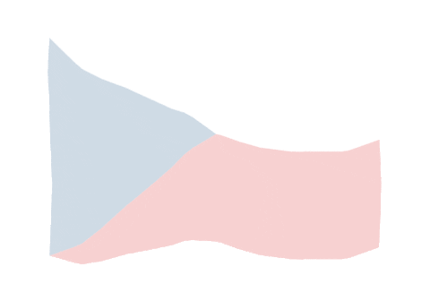

Czechy
Xmas w Czechach
W Czechach Boże Narodzenie jest połączone z elementami kulturowymi. Święta te są okazją do spędzenia czasu z rodziną, przygotowywania specjalnych potraw i cieszenia się wyjątkową atmosferą.
Najważniejszym dniem jest Wigilia, 24 grudzień, tradycyjnie, ten wieczór jest czasem spędzanym w rodzinie. Na stole pojawia się wiele potraw takich jak: barszcz czerwony z grzybami i uszkami oraz ryba. Kolacja wigilijna rozpoczyna się, gdy na niebie pojawią się pierwsze gwiazdy.
Wyjątkowy dzień
Czesi przywiązują dużą wagę do tradycji i obrzędów związanych z Bożym Narodzeniem. Istotnym elementem jest łamanie się opłatkiem, podczas którego członkowie rodziny składają sobie życzenia i udzielają błogosławieństwa. Oprócz tego, świąteczne kościoły i kaplice organizują specjalne msze świąteczne, które są ważnym aspektem dla osób praktykujących.
Dekorowanie domów i ulic, kolędy śpiewane w kościołach oraz przygotowania potraw odgrywają kluczową rolę w tworzeniu świątecznej atmosfery
Tradycje i potrawy
W Czechach obchodzi się je z zachowaniem wielu tradycyjnych zwyczajów i obrzędów. Oto kilka charakterystycznych tradycji:
- Barszcz Wigilijny z Uszkami (houbový)- jednym z najbardziej tradycyjnych dań serwowanych podczas kolacji wigilijnej.
- Łamanie się Opłatkiem - rodzinne spotkania wigilijne rozpoczynają się od łamania się opłatkiem i życzenie sobie życzeń na następny rok.
- Prezenty- wiele rodzin wymienia prezenty podczas kolacji wigilijnej lub rano 25 grudnia.
- Kolędy i Kościelne Msze Świąteczne- ludzie chodzą do kościołów na specjalne msze świąteczne.
- Karp jako Tradycyjna Potrawa- jest często spożywany podczas wigilijnej kolacji.
- Wróżby- mieszczenie jednego orzecha włoskiego na ruszcie i analizowanie dymu, jaki się wydobywa. Wierzono, że kształty dymu przewidują, co czeka ludzi w przyszłości.
- Rzucanie Butem w Drzwi- osoba trzyma but i go rzuca, a kierunek, w którym wskazuje nos, jest interpretowany jako wskazówka dotycząca przyszłych wydarzeń.
- Obieranie Jabłka- jeśli ktoś potrafi obrócić skórkę jabłka tak, aby została jednym długim kawałkiem, oznacza to powodzenie w nadchodzącym roku.
Podkreślają one znaczenie spędzania czasu z rodziną, wspólnotowość i radość z obchodzenia tego wyjątkowego czasu w roku. Boże Narodzenie w Czechach to okazja do celebrowania tradycji, wzmacniania więzi rodzinnych i cieszenia się wspólnym czasem w atmosferze świątecznej magii.